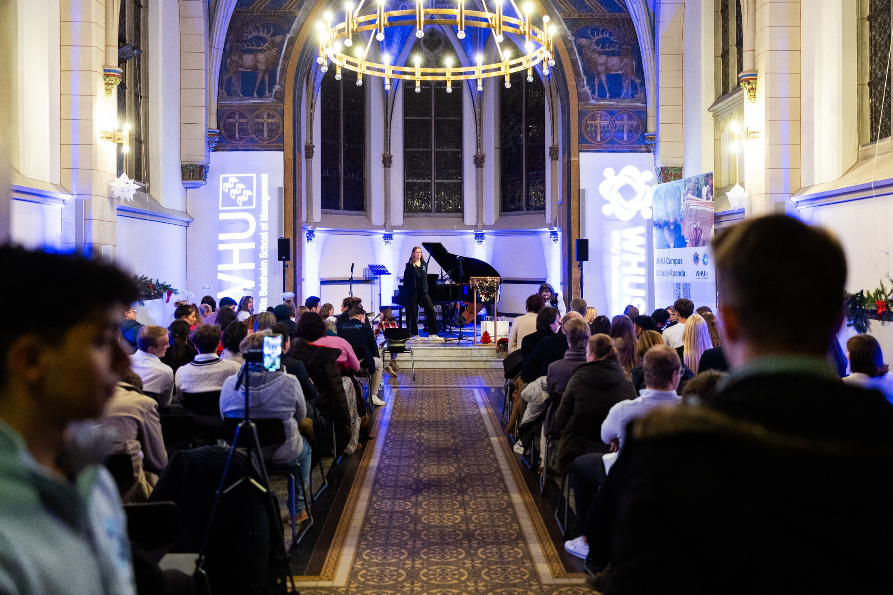

Empowerment through
Education
WHUSH, a social student initiative of WHU Otto Beisheim School of Management, dedicated to making an impact through local and international action

OUR MISSION
WHUSH is committed to providing children in countries of the Global South with access to quality education by initiating and supporting innovative educational projects. Our goal is to open doors to new opportunities through education and give every child the chances for a better future.
OUR VISION
Our vision is to be recognized as the leading German student initiative that brings about transformative change in countries of the Global South through education. We strive to create a world where every child, no matter where they live, has access to the resources they need to reach their full potential and make a sustainable contribution to their community and the world.
As a pioneer among German student initiatives, WHUSH transforms education in developing countries and creates pathways to a more equitable world.
OUR PROJECTS
How to get involved
Explore projects, meet the team, support with a donation, or start a conversation with us.